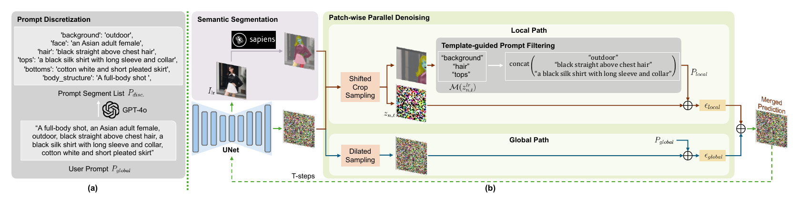
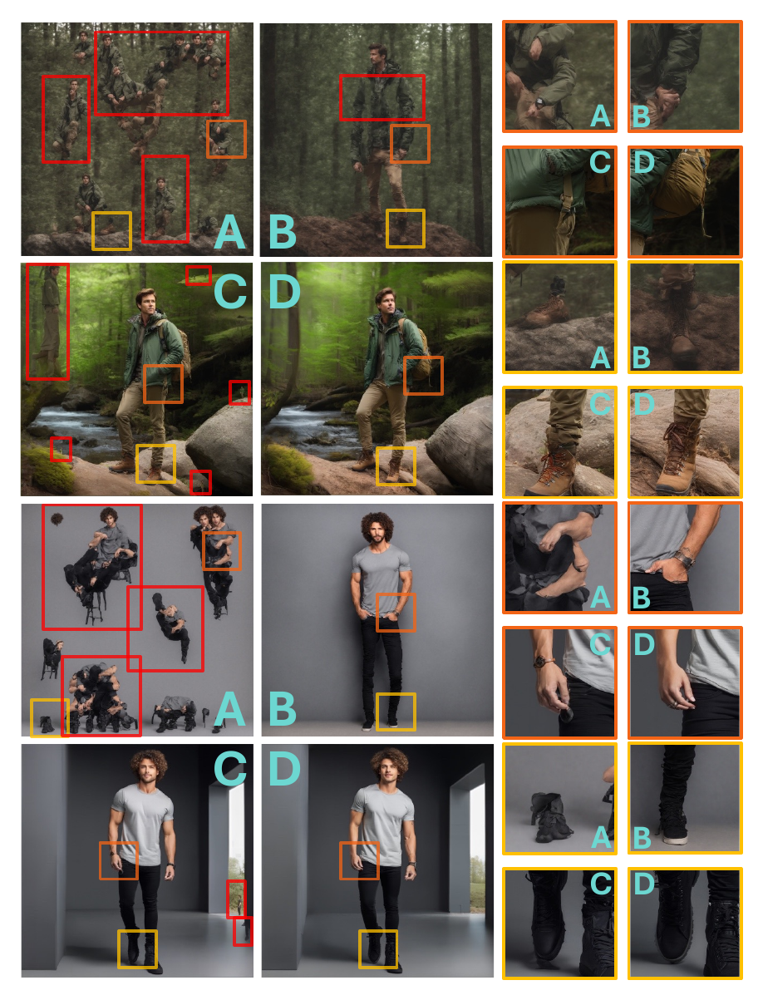

Why higher resolution?
Entertainment, media, and fashion require human images with details that remain credible when viewed or printed at large scale.
IEEE ISCAS 2025
HRHuman extends a pretrained 1K text-to-image model to 2K, 3K, and 4K human-centric generation without model fine-tuning, using human template knowledge to preserve structure during patch-wise denoising.
Given a text prompt and a low-resolution SDXL result, synthesize a coherent human image at 2K, 3K, or 4K while retaining global composition and fine local detail.
Entertainment, media, and fashion require human images with details that remain credible when viewed or printed at large scale.
Patch-wise upscaling can repeat people or body parts, distort anatomy, and lose the relationship between local regions and the global prompt.
The method must work with existing diffusion models without additional parameter tuning while balancing global structure and local fidelity.
View the original generation at 1K. At 2K, 3K, or 4K, drag the divider with the left mouse button to compare standard OpenCV interpolation with the HRHuman result. After zooming, double-click a region to center it.
“There is a woman with a scarf on her head looking at the camera.”

Drag the divider with the left mouse button. After zooming, double-click to center a region for closer inspection.
HRHuman augments patch-wise diffusion with region-aware text guidance while retaining a parallel global path for structural consistency.

The global prompt is decomposed into segments describing the background, body structure, clothing, and human parts.
Sapiens extracts human-part semantics. Each local patch receives only prompt segments aligned with the regions it contains.
Shifted-crop local sampling preserves detail, while dilated global sampling maintains composition. Their predictions are merged at each step.
Experiments compare tuning-free higher-resolution generation methods on 1,000 human-centric prompts sampled from LAION-5B.
4.1
HRHuman produces human-centric images at 2K and 4K with coherent structure and details that remain visible when enlarged.

4.2
Compared with SDXL direct inference, ScaleCrafter, and DemoFusion, HRHuman reduces repeated figures and improves hands, footwear, clothing, and global body structure.

4.3
At 4K, HRHuman obtains the best FID and KID. At 2K, it achieves the best FID and ties for the best CLIP score.
| Method | 2048² | 4096² | ||||
|---|---|---|---|---|---|---|
| FID ↓ | KID ↓ | CLIP ↑ | FID ↓ | KID ↓ | CLIP ↑ | |
| SDXL-DI | 92.40 | 0.0333 | 16.31 | 224.76 | 0.1354 | 15.41 |
| SDXL+BSRGAN | 67.23 | 0.0186 | 17.27 | 67.16 | 0.0186 | 17.35 |
| ScaleCrafter | 67.79 | 0.0162 | 17.28 | 86.03 | 0.0288 | 17.56 |
| DemoFusion | 62.14 | 0.0130 | 17.19 | 62.47 | 0.0124 | 17.22 |
| HRHuman | 62.04 | 0.0133 | 17.28 | 61.73 | 0.0123 | 17.29 |
Best in bold; second-best underlined.